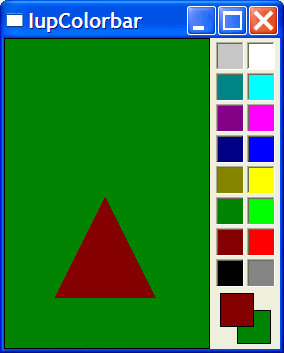

Creates a color palette to enable a color selection from several samples. It can select one or two colors. The primary color is selected with the left mouse button, and the secondary color is selected with the right mouse button. You can double click a cell to change its color and you can double click the preview area to switch between primary and secondary colors. It inherits from IupCanvas. Originally implemented by André Clinio.
Ihandle* IupColorbar(void); [in C] iup.colorbar{} -> (elem: ihandle) [in Lua] colorbar() [in LED]The function returns the identifier of the created Colorbar, or NULL if an error occurs.
ORIENTATION: Controls the orientation. It can be "VERTICAL" or "HORIZONTAL". Default: "VERTICAL".
NUM_CELLS: Contains the number of color cells. Default: "16". The maximum number of colors is 256. The default colors use the same set of IupImage.
NUM_PARTS: Contains the number of lines or columns. Default: "1".
CELLn: Contains the color of the "n" cell. "n" can be from 0 to NUM_CELLS-1.
PREVIEW_SIZE: Fixes the size of the preview area in pixels. The default size is dynamically calculated from the size of the control. The size is reset to the default when SHOW_PREVIEW=NO.
SHOW_PREVIEW: Controls the display of the preview area. Default: "YES".
SHOW_SECONDARY: Controls the existence of a secondary color selection. Default: "NO".
PRIMARY_CELL: Contains the index of the primary color. Default "0" (black).
SECONDARY_CELL: Contains the index of the secondary color. Default "15" (white).
SQUARED: Controls the aspect ratio of the color cells. Non square cells expand equally to occupy all of the control area. Default: "YES".
SHADOWED: Controls the 3D effect of the color cells. Default: "YES".
BUFFERIZE: Disables the redrawing of the control, so many attributes can be changed without many redraws. Default: "NO".
TRANSPARENCY: Contains a color that will be not rendered in the color pallete. The color cell will have a white and gray chess pattern. It can be used to create a pallete with less colors than the number of cells. Default is not defined.
SELECT_CB: called when a color is selected. The primary color is selected with the left mouse button, and if existant the secondary is selected with the right mouse button.
int function(Ihandle* self, int cell, int type); [in C] elem:select_cb(cell, type: number) -> (ret: number) [in Lua]cell: index of the selected cell.
type: indicates if the user selected a primary or secondary color. In can be: IUP_PRIMARY(-1) or IUP_SECONDARY(-2).If IUP_DEFAULT is returned the selection is accepted. If the callback does not exist the selection is always accepted.
CELL_CB: called when the user double clicks a color cell to change its value.
char* function(Ihandle* self, int cell); [in C] elem:cell_cb(cell: number) -> (ret: string) [in Lua]cell: index of the selected cell. If the user double click a preview cell, the respective index is returned.
The callback should return a new color or NULL (nil in Lua) to ignore the change. If the callback does not exist nothing is changed.
SWITCH_CB: called when the user double clicks the preview area outside the preview cells to switch the primary and secondary selections. It is only called if SHOW_SECONDARY=YES.
int function(Ihandle* self, int prim_cell, int sec_cell); [in C] elem:switch_cb(prim_cell, sec_cell: number) -> (ret: number) [in Lua]prim_cell: index of the actual primary cell.
sec_cell: index of the actual secondary cell.If IUP_DEFAULT is returned the switch is accepted. If the callback does not exist the switch is always accepted.
EXTENDED_CB: called when the user right click a cell with the Shift key pressed. It is independent of the SHOW_SECONDARY attribute.
int function(Ihandle* self, int cell); [in C] elem:extended_cb(cell: number) -> (ret: number) [in Lua]cell: index of the selected cell.
If IUP_DEFAULT is returned the control is redrawn.
Creates a Colorbar for selection of two colors.
